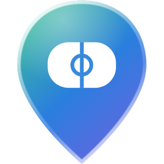

RinkfolioSupport
We usually reply within two days.
Email rinkfolioapp@gmail.com with questions, bug reports, rink corrections or feedback.
Reporting a skater, note, photo or win
On the skater's profile, tap •••, then Report, and choose a reason. To report one note, photo or shared win, tap its •••. If you think it's illegal, choose Illegal content and say why. Someone reviews every report within 24 hours, and the app tells you what we decided, in Notifications.
Reporting illegal content without an account
Email rinkfolioapp@gmail.com with:
- the skater's @username, and which note, photo or win (the rink and the day help);
- why you think it's illegal;
- your name and email;
- a statement that you believe your report is accurate and complete.
We'll confirm we got it, review it within 24 hours, and tell you what we decided.
Asking us to remove an intimate image
If someone posted an intimate photo of you, or of someone you're allowed to act for, without consent, you can ask us to remove it, with or without a Rinkfolio account.
In the app: tap the photo's •••, then Report photo, then Intimate image shared without consent. It's hidden from everyone at once.
Without an account, or for a profile photo, email rinkfolioapp@gmail.com with:
- your full name, as your signature;
- where the photo is: the skater's @username and the rink or day it's on (a screenshot helps);
- a statement that you believe in good faith it was shared without the consent of the person shown (and, if that isn't you, that you're allowed to act for them);
- how to reach you.
We remove it within 48 hours of a request with those four things, along with any copies of it we know about, and stop the same file being posted again. We'll tell you when it's done.
If you're under 18, or the image shows someone under 18, NCMEC's free Take It Down service can also help get it removed from other sites.
Disagreeing with a decision
If we removed something of yours, suspended your account, or decided about something you reported, and you think we got it wrong, email us within 6 months. Someone will look at it again and reply.
Blocking a skater
Tap ••• on the skater's profile, or on one of their notes or photos, then Block. You'll stop following each other and won't see each other's activity. To unblock, go to Profile › Settings › Blocked skaters.
Your data
In the app, go to Profile › Settings › Privacy to download a copy of everything in your account (Download my data), and to choose whether crash reports are sent and the days you open the app are counted. For anything else (correcting something, or a question about your data), email us and we'll answer within 30 days. See the Privacy Policy.
How we look after your information
Who's in charge. Rinkfolio's founder is responsible for protecting your personal information, and is the only person who can see it. Contact: rinkfolioapp@gmail.com.
What we keep, and for how long. We keep your account's information while you have the account, and delete it all when you delete the account. Some things go sooner, like the days you opened the app, after 13 months. The Privacy Policy lists each one.
Before anything new. Before we add a feature or a service that handles your information, or send it somewhere new, we write down what it needs, the risks and how we'll limit them, and check the service will protect it as well as we do.
If something goes wrong. We write down every incident, however small, and keep that record for five years. If one could seriously harm you, we tell you and the privacy regulator as soon as we can.
If you're unhappy with how we've handled your information, email us with what happened. We'll reply within 30 days with what we found and what we've done. If you're still unhappy, you can go to your privacy regulator; the Privacy Policy says which.
Deleting your account
In the app, go to Profile › Settings › Delete account. This permanently deletes your profile, lists, visits, notes, photos, practice and follows. If you can't get into the app, email us and we'll help you sign in, so you can delete it.
Signing in
Rinkfolio signs you in with a code texted to your phone number. If a code doesn't arrive, wait a minute and tap Send a new code. Codes expire after a few minutes.
Something wrong with a rink?
Rink data comes from OpenStreetMap and Overture Maps. Email us the rink's name and what's wrong and we'll fix it.